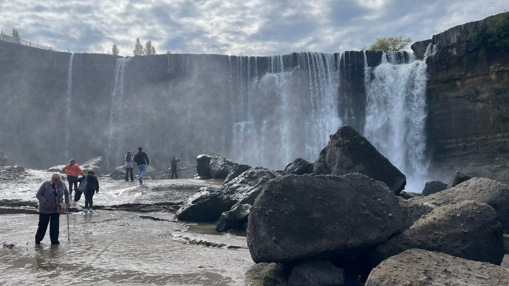
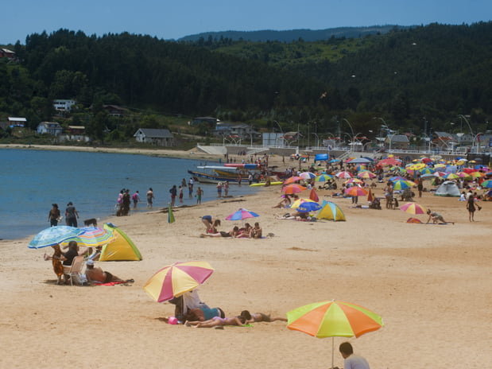

Rutas personalizadas
Encuentra itinerarios diseñados según tus gustos, duración y nivel de aventura.

Una plataforma sencilla para encontrar excursiones, guías locales y alojamientos sustentables en la Región del Biobío.
Servicios
Encuentra itinerarios diseñados según tus gustos, duración y nivel de aventura.
Reserva experiencias con expertos de la zona que conocen el territorio y la cultura.
Elige hospedajes sostenibles que apoyan a comunidades y protegen el entorno.
Accede a descuentos y beneficios para usuarios tempranos de la plataforma.
Destinos

Playas, gastronomía y espacios familiares cerca de la costa.

Arenas claras y olas suaves para disfrutar un día de descanso.
Montañas, nevados y rutas de trekking al pie del volcán.

Naturaleza pura, cultura mapuche y turismo sustentable en la cordillera.
Beneficios
La plataforma facilita el acceso a experiencias responsables, impulsa el comercio local y entrega información clara para viajar seguro.
Regístrate hoy y recibe novedades, descuentos y acceso anticipado a nuevas experiencias.